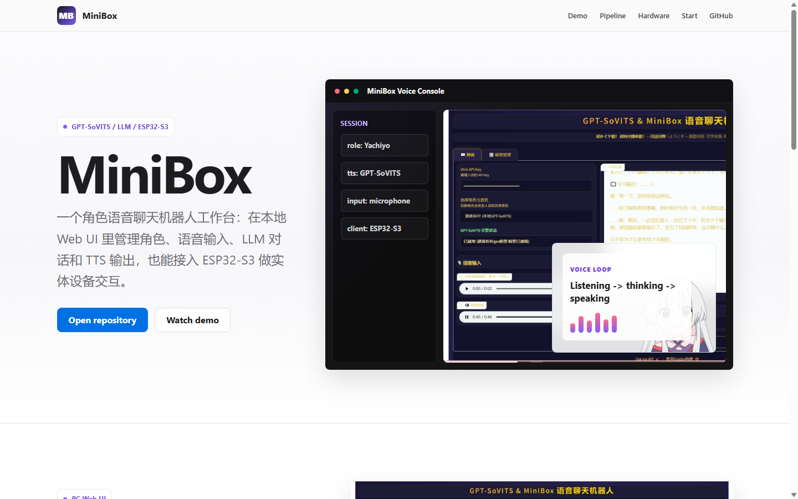

CASE 04 / VOICE / HARDWARE
MiniBox
角色语音交互与硬件闭环
目标用户
希望通过实体设备进行角色语音交互的用户
当前形态
软硬件交互闭环
展示重点
场景拆解 · 产品取舍 · 工程验证

图片为项目界面或展示页，具体运行范围见下方验证说明。
为谁解决什么问题
角色语音交互需要同时考虑声音、对话等待和硬件成本，而不仅是完成一次文本生成。
把能力组织为使用流程
设备录音 → 语音识别 → 对话生成 → 语音合成 → 设备播放
通过 UVR5 构建干音数据集并微调 GPT-SoVITS，用 FastAPI 提供异步语音服务，对接 LLM、WebUI 与 ESP32-S3。
先做什么，如何取舍
把算力集中在 PC，端侧只做录音播放；优先完成交互链路，再评估响应体验。
PC 承担 STT/LLM/TTS，设备端负责录音播放；采用标点流式截断与异步合成，面向首段语音等待进行优化。
已实现什么，开源社区外部反馈如何
已完整打通端侧 ESP32-S3 录音 — PC 端 LLM + GPT-SoVITS 推理 — 端侧播放的低成本硬件闭环，并在 GitHub 开源后获得动漫与 VTuber 技术爱好者及开源推广社区的自发分享与来信肯定：
“MiniBox 这个项目真的很用心，把 GPT-SoVITS 本地语音合成和 LLM 角色扮演结合，再通过 Gradio 界面和 ESP32 智能玩偶实现沉浸式对话，尤其是为动漫、VTuber 爱好者打造个性化角色交互的理念，特别有温度。”— 开源社区与技术推广团队外部来信反馈
诚实边界：项目已验证软硬件交互闭环与社区口碑，未虚构量化端到端延迟或商业化销量数据。
下一步如何判断是否有用
首段语音延迟、完整轮次成功率及打断体验；当前未提供量化性能报告。
以上为建议验证方向，不是已经完成的用户研究、A/B 测试或业务增长结果。
根据项目现有公开实现整理；用户场景为产品定位描述，不代表已完成用户访谈。